Vivienda Cesar + Aixa — v8
3 estrategias con candidatos · comparativa · decisión al final
Generado 2026-04-22 · Howl · v8 · sin duplicados entre planes · todas las properties únicas
Cómo leer este documento
Tres estrategias presentadas en paralelo, cada una con 5 candidatos + perfil de barrio/pueblo. Sin juicios anticipados. v8: sin duplicados entre planes + filtro anti-"no hipoteca / sin servicios" mantenido. 15 properties únicas. La comparativa y la decisión quedan al final (§4-5), después de que hayas visto todo.
- Plan A · Valladolid centro habitual — piso ciudad, familia en barrio caminable
- Plan B · Inversión rural con Meli puente — no se mudan, compran rural para rentar
- Plan C · Pueblo habitual con amenities — casa con jardín, viven en pueblo cerca de Valladolid
0. Contexto y principios
La compra va a pasar mientras (a) están tratando de tener un hijo, (b) Meli y su pareja viven con ustedes 6 meses, (c) trabajan remoto siempre, y (d) La Postal ya no tiene ancla en Moratalaz. Los principios de pareja importan tanto como el spreadsheet.
La pareja va primero. Aixa está conflictada — cualquier opción tiene que pasar su filtro, no solo el de Cesar.
Las rutinas se protegen. Ejercicio juntos, flow sessions, artist dates, home rhythm, Sunday Reset.
Elegir con intención, no por inercia. No quedarse en Madrid por default, no irse a pueblo por huida.
Libertad y autonomía. La compra tiene que expandir opciones, no cerrarlas.
Abundancia, no miedo. Espacio suficiente para familia que va a crecer.
Descartado antes de empezar — Moratalaz/Retiro/Vicálvaro <€200k habitual. Los 21 listings filtrados tienen mediana de 55m² y 2 habitaciones. No caben 4 adultos ahora, mucho menos con bebé en 18 meses. Sin La Postal en Moratalaz, tampoco hay pull específico a esa zona. No aparece en ninguno de los 3 planes abajo.
Fix aplicado: v4 corrigió un bug en mi cálculo de tiempos en coche — 28 properties habían sido filtradas injustamente por geocoding ambiguo. Los datos de abajo están corregidos.
Tesis
Comprar piso en Valladolid centro o semi-centro (Centro, Circular-Vadillos, Pº Zorrilla-Campo Grande). Meli+pareja ocupan los primeros 6 meses aportando gastos. A los 6-8 meses ustedes se mudan. A los 18 meses, bebé en entorno de ciudad caminable con servicios.
1.1 Top 5 candidatos
#1 · id 108307206€209.000
Calle de Cervantes · Circular-Vadillos
112 m²4 hab2 bañosPisoBuen estado
✓ ascensor · ✓ terraza · 15 min a Plaza Mayor · €1.866/m² · rentabilidad 6,9%
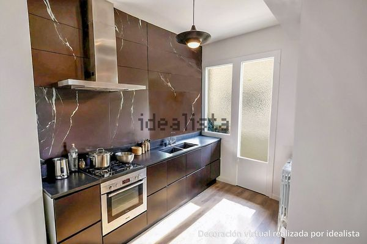
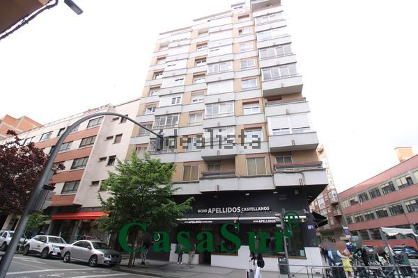
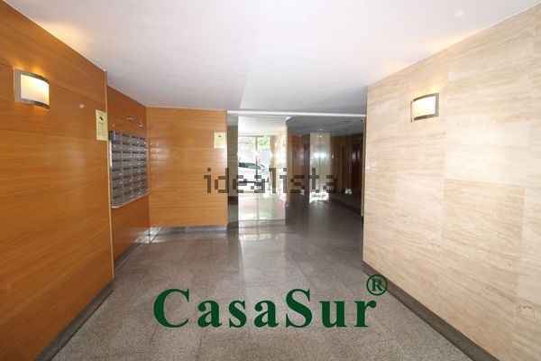
#2 · id 106362472€227.000
Calle Estación · Centro
113 m²3 hab2 bañosPisoBuen estado
✓ ascensor · ✓ garaje · 18 min a Plaza Mayor · 5 min a estación AVE · €2.009/m²
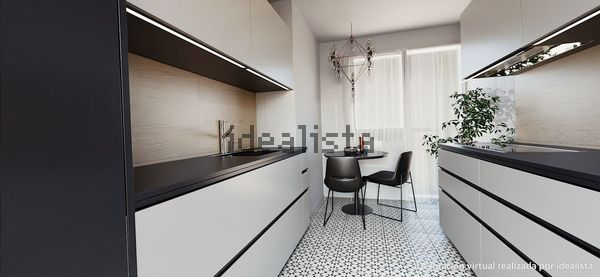
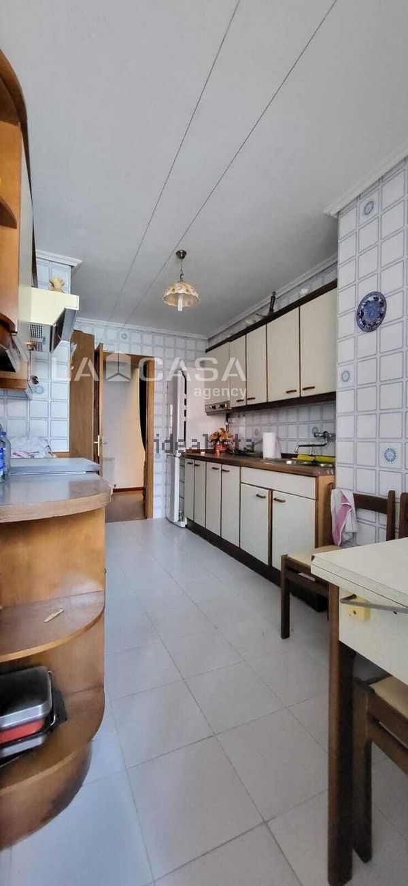
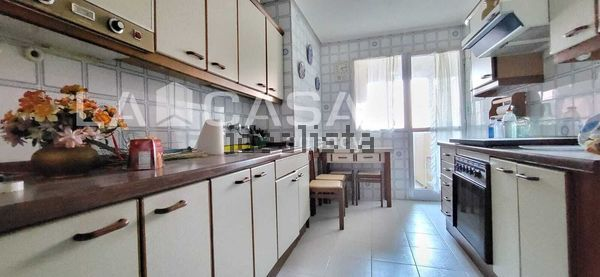
#3 · id 110817335€250.000
Circular-Vadillos
102 m²5 hab1 bañoPisoBuen estado
✓ ascensor · ✓ terraza · 21 min a Plaza Mayor · todas las habitaciones exteriores · €2.451/m²
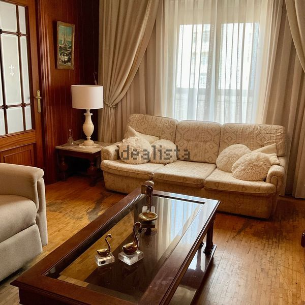
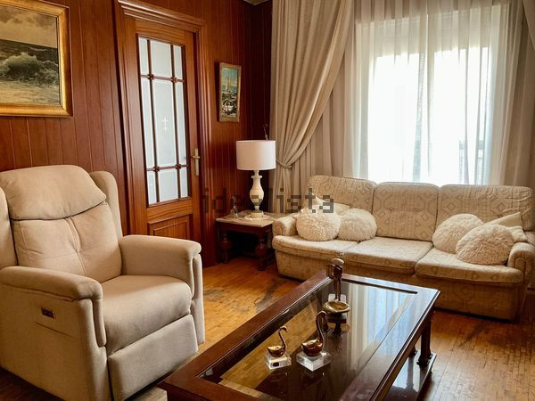
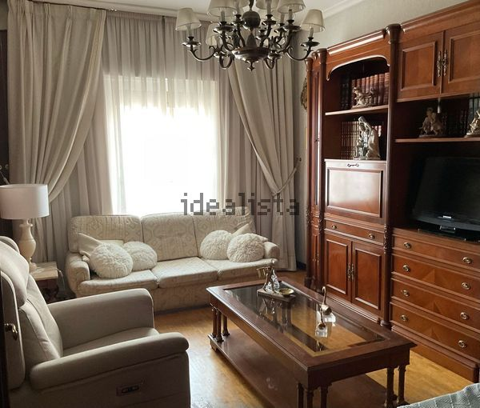
#4 · id 107253323€225.000
Calle Nicolás Salmerón, 8 · Centro
100 m²4 hab2 bañosPisoBuen estado
✓ ascensor · 15 min a Plaza Mayor · semi-centro · €2.250/m²
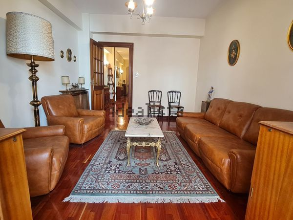
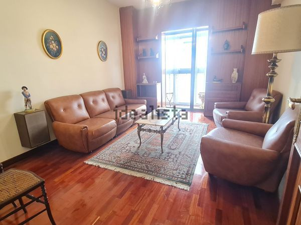
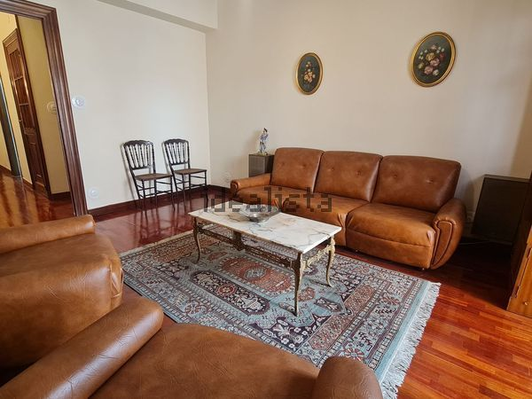
#5 · id 110030377€224.900
Calle Padre Francisco Suárez · Pº Zorrilla-Campo Grande
105 m²3 hab2 bañosPisoBuen estado 1985
✓ ascensor · ✓ terraza · 19 min a Plaza Mayor · parquet, cocina amueblada · €2.142/m²
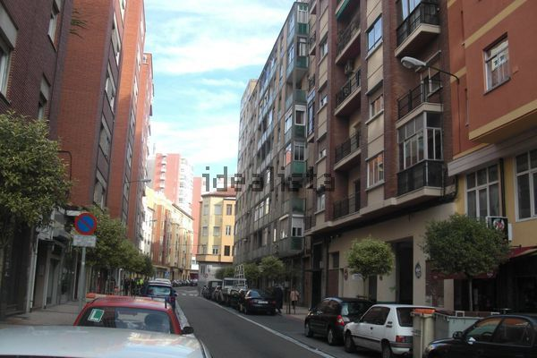
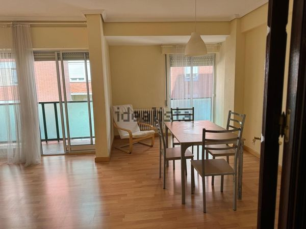
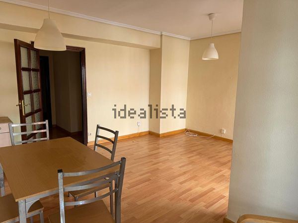
1.2 Perfil de barrios · Valladolid
Centro Valladolid · el corazón histórico
Casco histórico y comercial. Plaza Mayor, Calle Santiago, Calle Ferrocarril. "Trufado de pequeñas plazas acogedoras y de espaciosas vías peatonales". Próximo a estación AVE.
Caminabilidad: Muy alta
Seguridad: Alta
Parques: Campo Grande a 10 min
Cafés: Densidad alta — Castivera, Nuberu
Servicios: todo
Ruido: moderado (fines de semana más)
Familia con bebé: ✅ ideal; ojo con ruido weekend.
Circular-Vadillos · al norte del Centro, más tranquilo
Dos barrios gemelos articulados en torno a plazas importantes. Residencial, menos turístico, vida de barrio.
Caminabilidad: Alta
Seguridad: Alta
Parques: plazas pequeñas + Campo Grande 20 min
Cafés: Media — de barrio
Servicios: completos
Ruido: Bajo
Familia con bebé: ✅ ideal — tranquilo con servicios.
Pº Zorrilla-Campo Grande · junto al parque emblema
Paseo Zorrilla como eje comercial y verde; Parque Campo Grande al lado — "115.000 m² con pavos reales, jardines románticos".
Caminabilidad: Muy alta
Seguridad: Alta
Parques: Campo Grande al lado
Cafés: Alta — Nuberu, Vasi's
Servicios: AVE Campo Grande a 15 min
Ruido: Medio
Familia con bebé: ✅✅ probablemente el mejor por el parque al lado.
Tesis
Comprar casa rural lista para mudar (sin reformar). Meli+pareja entran inmediatamente pagando renta desde GT con ventaja cambiaria. Después: short-term rental para turismo o venta. Ustedes siguen en Madrid alquilando. Cero disrupción a la pareja.
2.1 Top 5 candidatos · todos únicos (buen estado)
#1 · id 111222755€170.000
Felipe Santande · Tordesillas (Urb. La Providencia)
282 m²9 hab2 bañosChalet adosadoBuen estado
✓ jardín · 24 min a Valladolid · ITP 4% joven · Plan Estatal rural · dos viviendas independientes en la parcela
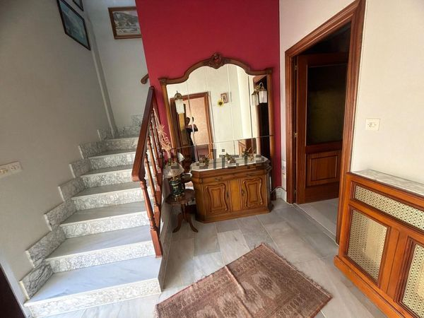
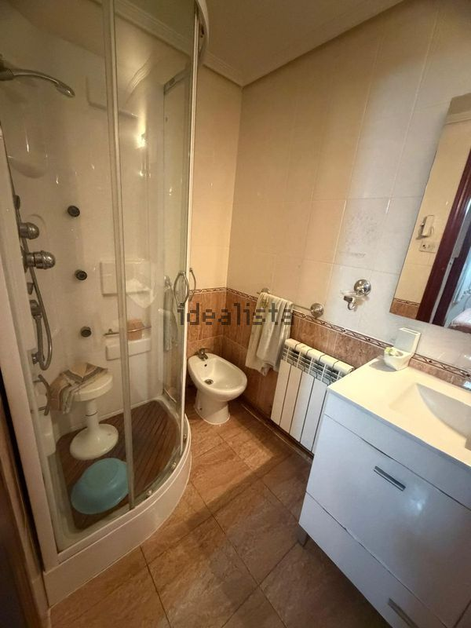
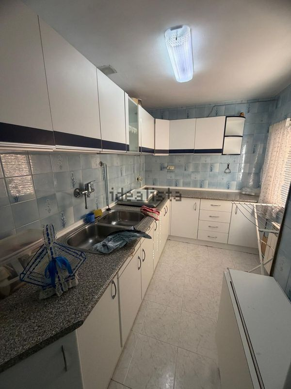
#2 · id 107166163€70.000
Calle Real de Santa María · Bercero (pedanía Tordesillas)
549 m²5 hab1 bañoCasa · 1930Buen estado
✓ jardín · ✓ trastero · 29 min a Valladolid · €128/m² (el mejor ratio) · Plan Estatal rural
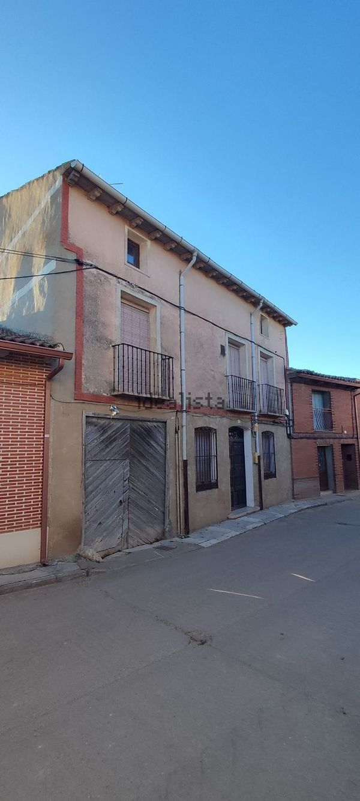
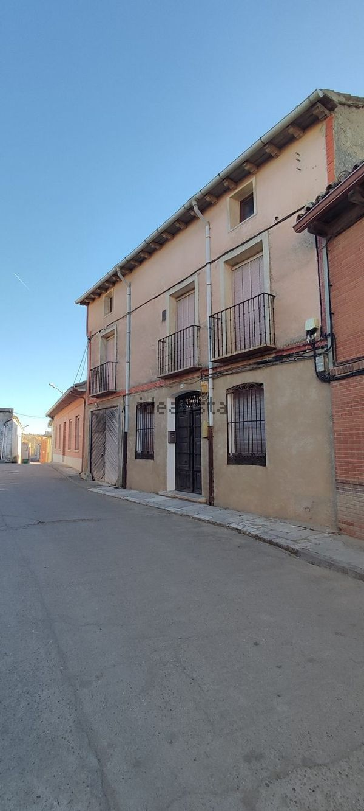
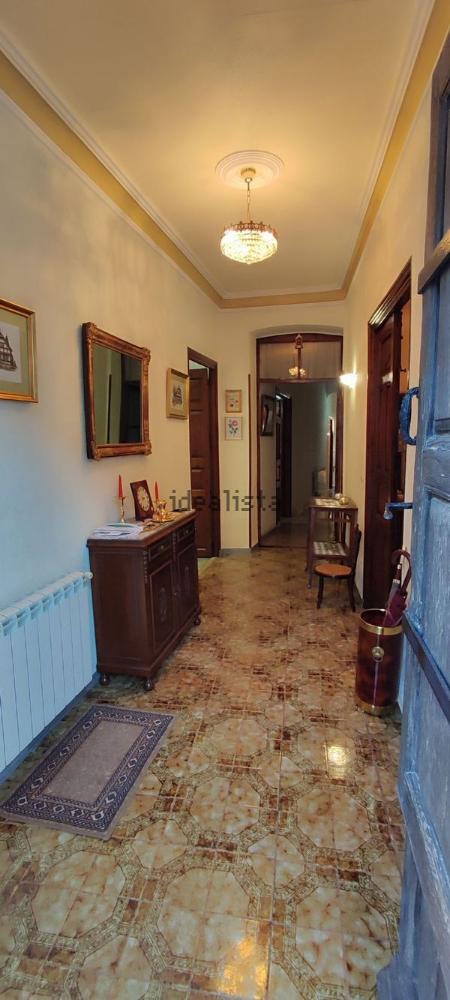
#3 · id 106204131€156.000
Calle San Vicente 15 · Casco Histórico Tordesillas
301 m² construidos6 hab1 bañoCasa · 1940Buen estado
✓ jardín · ✓ garaje · ✓ trastero · 24 min a Valladolid · ITP 4% joven · Plaza Mayor a 1 min
"Dos casas juntas" en casco histórico peatonal de Tordesillas — muy cerca de colegios, centro de salud, comercios.
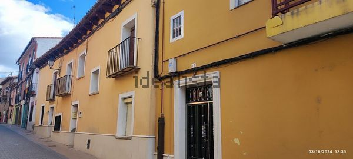
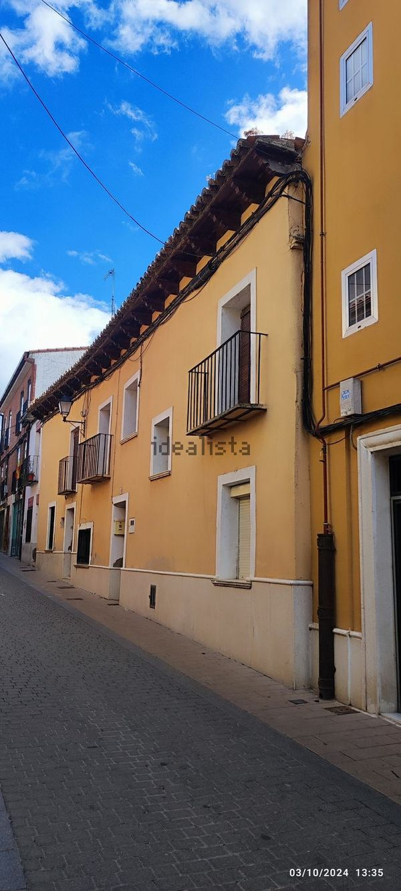
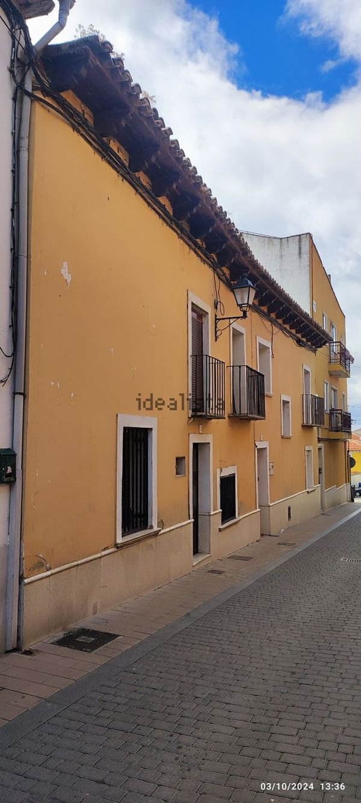
#4 · id 103518822€55.000
Calle León 12 · Foncastín · Rueda (1.410 hab)
348 m²4 hab1 bañoCasa independienteBuen estado
✓ garaje · 29 min a Valladolid · ITP rural 0,01% · Plan Estatal rural · €158/m² · DO Rueda (enoturismo)
Foncastín es pedanía de Rueda, a 6 km del pueblo principal y a 6 km de Tordesillas. Rueda es DO vinícola con demanda de enoturismo — short-term rental angle.
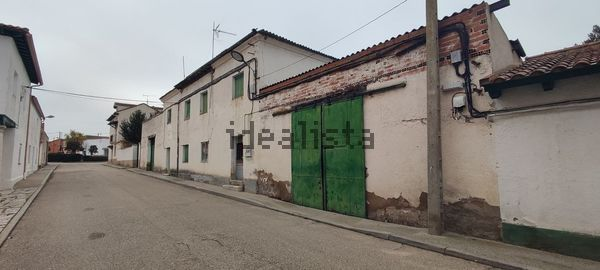
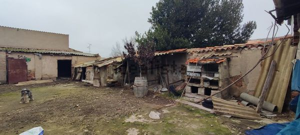
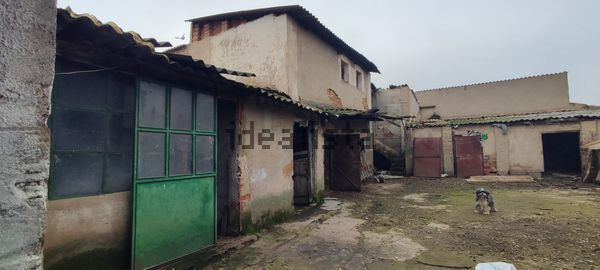
#5 · id 103239156€138.000
Centro s/n · Torrelobatón
305 m²5 hab4 bañosCasa · 3 plantasBuen estado
✓ jardín · ✓ garaje · ✓ terraza · 29 min a Valladolid · bodega 55m² con horno de leña · Plan Estatal rural
Casa en el corazón del pueblo de Torrelobatón. 4 plantas + bodega con horno de leña + despensa. 5 hab, 4 baños — excelente para alquiler de grupos grandes o familias extendidas.
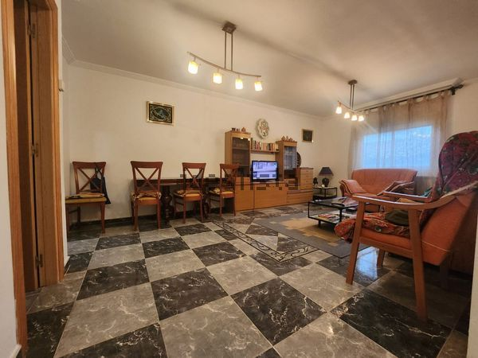
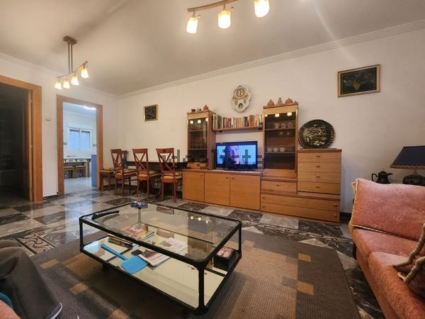
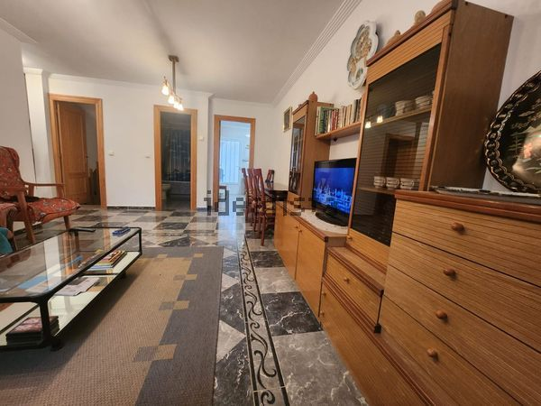
2.2 Perfil de pueblos · Plan B
Tordesillas Casco Histórico (8.773 hab) · 24 min
El nuevo #5 de Plan B está en el casco histórico peatonal de Tordesillas. Pueblo mediano con colegios, centro de salud, piscina climatizada, comercios, supermercados a pie. Plaza Mayor a 1 minuto. Crecimiento +1.000 habitantes este siglo.
Caminabilidad: Muy alta (casco peatonal)
Cafés: Alta — turismo
Servicios: Completos
ITP: 4% joven (muni >3k hab)
Tordesillas (8.773 hab) · 24-29 min
Pueblo histórico sobre el Duero, Tratado de Tordesillas, patrimonio + turismo cultural. Todos los servicios (colegio, hospital, consultorio, comercios). Ha crecido +1.000 habitantes este siglo.
Caminabilidad: Alta — casco peatonal
Cafés: Alta — turismo mantiene oferta
Servicios: completos
Para short-term rental: ✅✅ mercado real
La Pedraja de Portillo (1.186 hab) · 24 min
Municipio pequeño en Área Metropolitana de Valladolid. Compacto, entorno natural.
Servicios: básicos; Portillo a 5 min
ITP: rural 0,01%
A Valladolid: 24 min
Tesis
Vivir en pueblo a ≤25 min de Valladolid en casa grande con todas las amenities (jardín, garaje, preferible piscina). Opción intermedia entre piso ciudad e inversión rural. Aquí ustedes viven, criando al bebé con jardín propio, con acceso a Valladolid cuando lo necesitan.
Cuándo esta estrategia es la buena
- Aixa prefiere ambiente más tranquilo/verde que ciudad pura.
- Quieren jardín propio para bebé y pets.
- Trabajo remoto 100% les permite no estar a 5 min del centro.
- Estilo de vida "slow" con coche como default.
Criterios aplicados
- ≥150 m² · Buen estado · Jardín + garaje OBLIGATORIO · Piscina bonus · ≤25 min a Valladolid · Muni ≥1.000 hab preferible
3.1 Top 5 candidatos
#1 · id 108127647€199.500
San Miguel del Pino · pedanía Tordesillas
342 m²6 hab2 bañosCasa/chaletBuen estado
✓ piscina · ✓ jardín · ✓ garaje · ✓ terraza · ✓ trastero (FULL) · 24 min a Valladolid · ITP rural
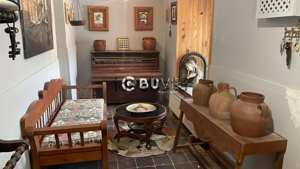
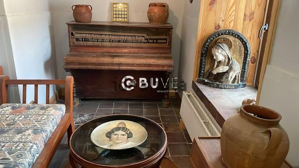
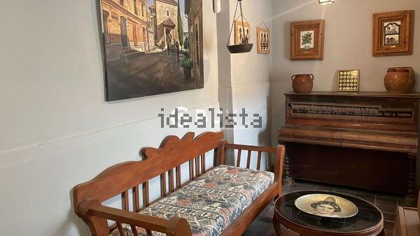
#2 · id 108923225€199.500
Calle de Onésimo Redondo · San Miguel del Pino
343 m²7 hab2 bañosCasaBuen estado
✓ piscina · ✓ jardín · ✓ garaje · ✓ terraza · 21 min a Valladolid · ITP 0,01%
Overlap con Plan B — si la compran, cubre habitual + potencial renta de Meli los primeros 6 meses.
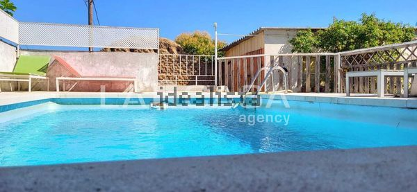
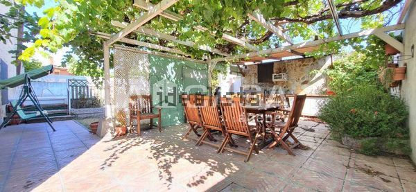
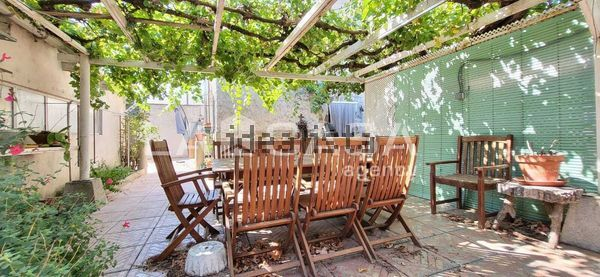
#3 · id 101370946€124.500
Extrarradio parcela 8 · La Pedraja de Portillo
429 m²8 habCasa puebloBuen estado
✓ jardín · ✓ garaje · ✓ terraza · ✓ trastero · 24 min · ITP 0,01% · (sin piscina pero espacio para construirla)
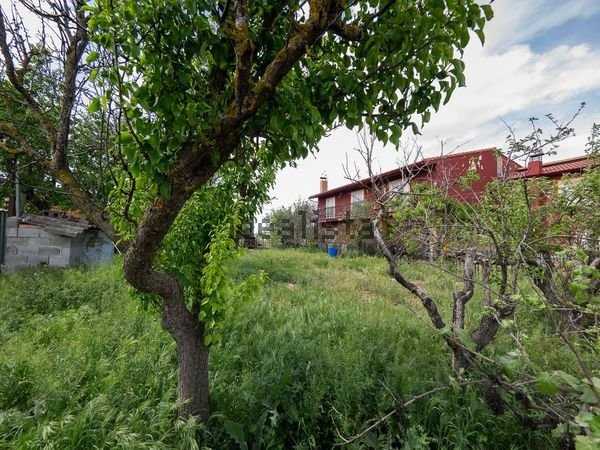
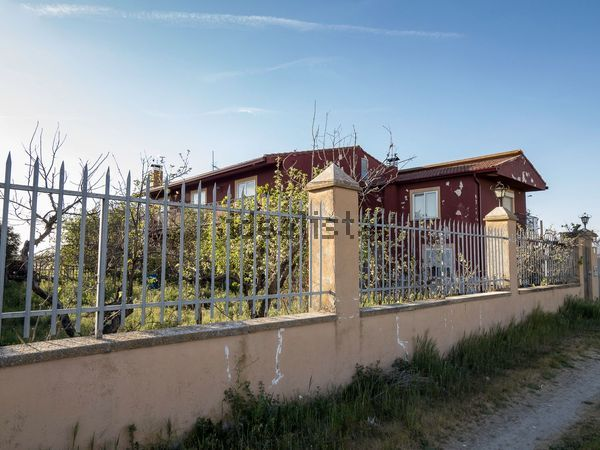
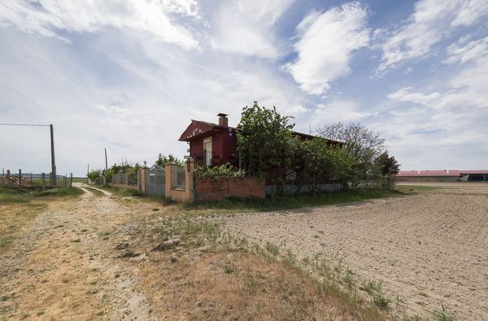
#4 · id 105305935€160.000
Tordesillas (8.773 hab)
300 m²3 habCasa/chaletBuen estado
✓ piscina · ✓ jardín · ✓ garaje · ✓ terraza (FULL) · 24 min · ITP 4% joven
Tordesillas es pueblo grande con todos los servicios reales — colegio, hospital, consultorio, comercios.
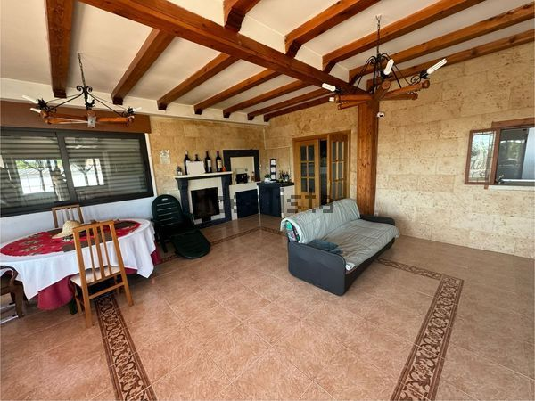
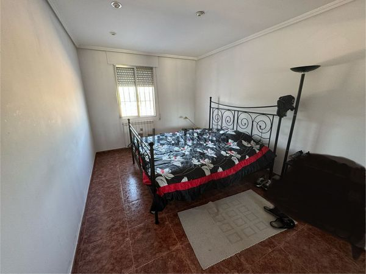
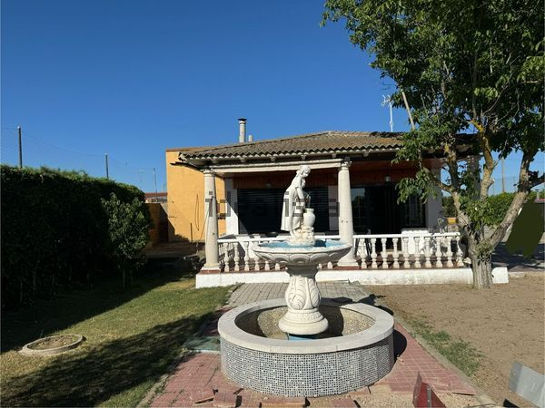
#5 · id 110033612€218.000
Calle San Isidro · Boecillo (4.446 hab)
186 m²4 hab2 bañosCasa independiente · 1987Buen estado
✓ garaje · ✓ terraza · ✓ trastero · Parcela 1.611 m² (con espacio para piscina o jardín propio) · 18 min a Valladolid · ITP 4% joven
Casa independiente en zona tranquila residencial del municipio de Boecillo (alfoz de Valladolid). Parcela de 1.611 m² con mucho espacio. Reemplazo del Cigales anterior que era finca rústica (pozo+solar, no hipotecable). Boecillo es "pueblo acogedor y hospitalario" a 18 min en coche — el más cercano del Plan C.
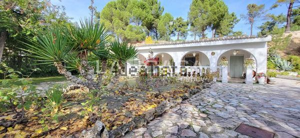
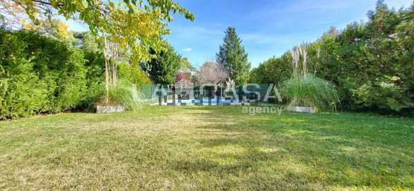
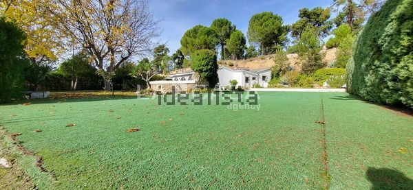
3.2 Perfil de pueblos · Plan C
San Miguel del Pino · 21-24 min · pedanía Tordesillas
Pequeña localidad a orillas del Duero, "pueblo que conquista a los turistas". Frente al Parque Alameda, rodeado de zonas verdes, instalaciones deportivas y educativas.
Caminabilidad: Alta
Seguridad: Muy alta
Parques: Duero + zonas verdes
Servicios: básicos; Tordesillas 5 min
La Pedraja de Portillo · 1.186 hab · 24 min
Pueblo pequeño en Área Metropolitana de Valladolid. Tranquilidad máxima. Requiere coche para servicios avanzados.
Tordesillas · 8.773 hab · 24 min
El pueblo más poblado del set. Servicios completos, casco histórico peatonal, ribera Duero, turismo cultural fuerte. El mejor balance "pueblo con masa crítica de servicios".
Cafés: Alta (turismo)
Hospital: sí
Colegio: sí
Comercios: completos
Cigales · 5.454 hab · 20 min
Pueblo de DO vinícola. "Todo lo necesario para el día a día: supermercados, tiendas de proximidad, colegios, centro de salud". El más cercano a Valladolid del Plan C.
Servicios: Completos
A Valladolid: 20 min
4. Comparativa directa de las 3 estrategias
| Dimensión |
Plan A · Valladolid centro |
Plan B · Inversión rural |
Plan C · Pueblo habitual |
| Uso | Habitual familia | Inversión (Meli puente + ST) | Habitual familia |
| Cash total | €12-35k | €3-25k | €5-30k |
| Cuota mensual | ~€880/mes | ~€550-750/mes | ~€500-850/mes |
| Espacio | 100-115m² piso | N/A (no viven) | 250-430m² casa |
| Jardín propio | No | N/A | Sí |
| Piscina | No | N/A | 4 de 5 candidatos |
| Ecosistema Aixa | Ciudad (propio) | Intacto (Madrid) | Reconstruir en pueblo |
| Rutinas de pareja | Reconstruibles en ciudad | Intactas | Reconstruibles + coche siempre |
| Mudanza requerida | Sí (a Valladolid) | No | Sí (a pueblo) |
| Resuelve "vivienda familia con bebé" | Sí | No (siguen Madrid) | Sí |
| Ingreso pasivo opcional | Meli contribución gastos | Renta formal GT | Meli contribución gastos |
| Reversibilidad | Alta (líquido) | Media | Media-baja (rural grande) |
| Alineación principios | Alta si Aixa OK | Muy alta | Alta si Aixa quiere verde |
Cuándo elegir cada una
- Plan A si priorizan vida urbana, cafés y amenities públicas a pie, y Aixa lo endorsa.
- Plan B si no quieren mudarse, quieren optionality + ingreso pasivo, Madrid les sigue funcionando.
- Plan C si priorizan espacio, jardín propio + piscina para bebé, están OK con pueblo y coche.
5. Decisión · mi recomendación ponderada
Lectura final después de ver las 3
El Plan C es el que cambia la ecuación. Antes de v5 había "ciudad vs ingresos pasivos"; ahora hay "ciudad vs ingresos pasivos vs casa con jardín para criar al bebé". Para una familia que quiere bebé en 18 meses, jardín propio + piscina + pueblo con servicios reales es una tesis fuerte que no existía antes.
Mi apuesta ponderada:
- Primera opción: Plan C · Cigales (#5) o Tordesillas (#4). Ambos son pueblos medianos con servicios reales, casa con piscina y jardín, ≤24 min de Valladolid. El Plan C resuelve "vivienda familia + jardín bebé + ingreso colchón de Meli" simultáneamente.
- Segunda opción: Plan A · Pº Zorrilla-Campo Grande (#5) o Circular-Vadillos (#1). Si Aixa prefiere ciudad y caminabilidad pura.
- Tercera opción: Plan B · Cubillas o La Pedraja. Si hoy no están listos para decidir habitual pero el timing con Meli urge — el Plan B compra sin mudarse y deja la decisión habitual para 12-18 meses.
Los principios — chequeo por plan
| Principio | Plan A | Plan B | Plan C |
|---|
| Pareja primero | Aixa debe endorsar ciudad | Sin disruption | Aixa debe endorsar pueblo |
| Rutinas se protegen | Reconstrucción en ciudad | Intactas | Reconstrucción + coche |
| No favores con resentimiento | Renta Meli en números | Renta Meli clara | Renta Meli clara |
| Dar sin expectativa | Si Meli no paga, no escalar | Independiente del piso | Igual |
| Elegir con intención | ¿ciudad por default? | ¿B es no-decidir? | ¿huida o elección? |
| Libertad/autonomía | Alta | Máxima | Media (compromiso con pueblo) |
| Abundancia | Espacio apenas suficiente | N/A (siguen Madrid) | Espacio abundante |
6. Diálogos sugeridos para llegar a consenso
- Pregunta a Aixa primero (antes de ver nada): "Si imaginás tu vida en 2028 con bebé de 2 años — ¿qué entorno te da paz? ¿Un piso en Valladolid con Campo Grande al lado, o una casa con jardín en Cigales/Tordesillas a 20 min de Valladolid?"
- Pregunta a Cesar: "¿Estás dispuesto a que el rhythm sea coche-a-casi-todo? ¿O la fricción de no poder caminar al café te va a frustrar?"
- Visita presencial (esencial): un weekend en Valladolid combinando 2 pisos Plan A + 2 casas Plan C. Aixa decide con el cuerpo.
- Si las dos les cuajan: gana Plan C si quieren más espacio/jardín; Plan A si quieren más ecosistema social.
- Si ninguna les enamora: Plan B para arrancar con Cubillas (sin mudarse), re-evaluar habitual en 12-18 meses.
- Regla no negociable: no firmar con duda residual. Inquietud + contrato = regret.
7. Próximos pasos concretos
- Esta semana: Cesar habla con broker hipotecario — confirma ratio con €36k facturados y tipo real con ICO Aval Joven.
- Semana 1-2: contactar a idealista los candidatos favoritos de los 3 planes para pedir visitas + ITE + cuota comunidad.
- Weekend visitas: día 1 Valladolid ciudad (Plan A barrios), día 2 pueblos (Plan C — Cigales + Tordesillas).
- Sunday Reset post-visita: los 2, sin prisa, con las preguntas del §6.
- Decisión: si hay sí claro → oferta + due diligence. Si no → alquilar más grande Madrid 12-18 meses y re-evaluar.